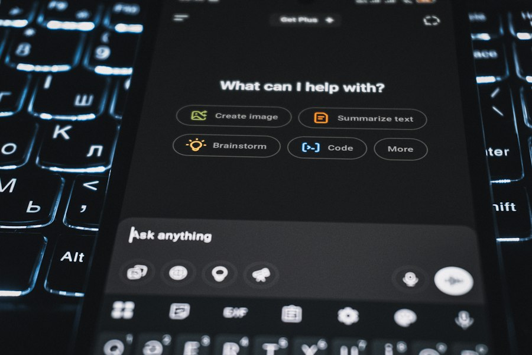

Biznesni avtomatlashtirish
O'rta va katta bizneslar uchun AI asosidagi yechimlar: takroriy ishlarni avtomatlashtirish, chat-botlar, CRM integratsiyalar.
Yangi loyihalar uchun ochiqman
3 yildan ortiq tajribaga ega xalqaro marketolog va AI mutaxassisiman. Bizneslarga zamonaviy texnologiyalar yordamida o'sish va samaradorlikka erishishda ko'maklashaman.
Xizmatlar
O'rta va katta bizneslar uchun AI asosidagi yechimlar: takroriy ishlarni avtomatlashtirish, chat-botlar, CRM integratsiyalar.
Zamonaviy, tez va sotuvga yo'naltirilgan saytlar — vizitka saytdan tortib korporativ saytgacha.
Bozor va raqobatchilar tahlili, auditoriyani aniqlash va natijaga yo'naltirilgan aniq reja.
Loyihalarim

AI chat-botMijoz so'rovlarini qabul qilib, CRM'ga avtomatik yozib boruvchi Telegram bot.
Xizmatlar, portfolio va ariza formasi bilan tez ishlaydigan zamonaviy sayt.
Auditoriya tahlili, kontent yo'nalishlari va reklama kanallari bo'yicha 6 oylik reja.
Aloqa
Loyihangiz haqida qisqacha yozing — birgalikda eng to'g'ri yechimni topamiz.
Savolingiz bormi — yozing, javob beraman